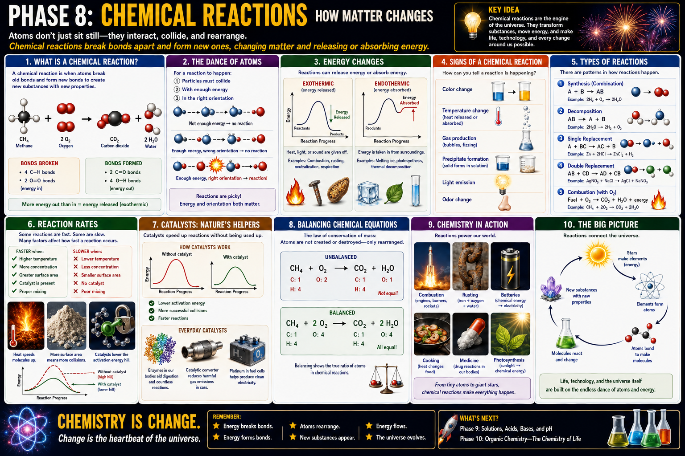

The starting materials
Reactants contain atoms connected in their original arrangement.
Chemistry · Bonds · Energy · Change
A lesson for Klins on how atoms rearrange, why reactions need successful collisions, how energy enters and leaves a reaction, and how chemists classify, speed up, and balance chemical change.

A reaction rearranges atoms into new combinations.
Reactants contain atoms connected in their original arrangement.
Breaking bonds requires energy. Forming bonds releases energy.
The same atoms are now connected differently, creating substances with new properties.
Atoms are not used up or created during an ordinary chemical reaction. They are reorganized. Balancing an equation is how we show that every atom is still accounted for.
Reactions need collisions, energy, and orientation.
Reactants must physically meet before their bonds can rearrange.
The collision must overcome the activation-energy barrier.
Even an energetic collision can fail if the reactive parts do not meet in a useful orientation.
Every reaction exchanges energy with its surroundings.
More energy is released when new bonds form than is required to break old bonds. Heat, light, or sound may be given off.
The reaction absorbs more energy than it releases. The surroundings may cool as energy enters the reacting system.
These observations suggest chemical change.
A new color can indicate that a new substance formed.
Unexpected heating or cooling reveals energy transfer.
Bubbles or fizzing may indicate a gaseous product.
A solid may form from two reacting solutions.
Some reactions release energy as visible light.
A new odor can indicate volatile products, though chemicals should never be smelled directly.
Reaction types help us recognize recurring structures.
Two or more simpler substances combine.
One compound breaks into simpler substances.
One element replaces another in a compound.
Two compounds exchange components.
A fuel reacts rapidly with oxygen and releases energy.
Electrons move between substances, as in batteries, rusting, and combustion.
Rate depends on how often successful collisions occur.
Higher temperature usually increases particle speed and collision energy.
More particles in a given volume means more collisions.
Smaller pieces expose more particles to contact.
Stirring brings reactants together more often.
For gases, higher pressure packs particles closer together.
A catalyst lowers the activation-energy barrier.
A catalyst changes the route without being consumed overall.
The catalyst provides a pathway that requires less activation energy.
More particles now have enough energy to react.
Enzymes, catalytic converters, and fuel-cell catalysts all accelerate important reactions.
Balancing is atom bookkeeping.
The substances are correct, but the atom counts are not equal.
Carbon, hydrogen, and oxygen are now conserved on both sides.
Reactions power ordinary life and advanced technology.
Engines and rockets convert chemical energy into heat, pressure, and motion.
Iron reacts with oxygen and water to form iron oxides.
Redox reactions move electrons through an external circuit.
Heat drives chemical changes in proteins, sugars, and fats.
Drugs alter chemical processes in cells and tissues.
Plants store light energy in chemical bonds.
A practical sequence for reading and understanding reactions.
Read the equation from left to right and name the starting and ending substances.
Check that each element is conserved.
Decide whether it is synthesis, decomposition, replacement, combustion, or redox.
Ask whether the reaction releases or absorbs energy.
Consider temperature, concentration, surface area, pressure, mixing, and catalysts.
Relate the reaction to batteries, corrosion, combustion, food, medicine, or biological processes.
Chemical reactions are where matter and energy meet. Atoms collide, bonds change, energy flows, and new properties appear. That simple pattern is behind flames, batteries, metabolism, rust, rockets, cooking, and life itself.